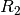
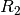
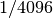
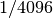

Mesurer des résistances par comparaison
Objectif
Apprendre à appliquer la loi d’Ohm pour trouver le valeur d’une
résistance inconnue par comparaison avec une résistance connue. La
tension aux bornes d’une résistance est donnée par  . Si la
même valeur de courant parcourt deux résistances différentes, alors le
rapport des tensions sera le même que le rapport des
résistances,
. Si la
même valeur de courant parcourt deux résistances différentes, alors le
rapport des tensions sera le même que le rapport des
résistances,  .
.

Procédure
- Connecter la résistance inconnue R entre PV1 et A1.
- Connecter
 () entre A1 et GND.
() entre A1 et GND. - Régler PV1 à 4V.
- Mesurer la tension en A1. Calculer le courant
 . Valeur de
. Valeur de
 .
. - Sélectionner «Électricité->Tracé d’une courbe courant-tension» dans le menu pour obtenir une courbe I-U.
Discussion
Quelle est la limitation de cette méthode? Comment choisir la
résistance de référence? Si on suppose que la valeur inconnue est en
 , quelle serait la chute de tension aux bornes d’une résistance de
référence de ? Notre mesure de tension a une résolution de
.
, quelle serait la chute de tension aux bornes d’une résistance de
référence de ? Notre mesure de tension a une résolution de
.
On utilisera cette méthode plus tard pour mesurer la résistance de solutions, à l’aide de courant alternatif.